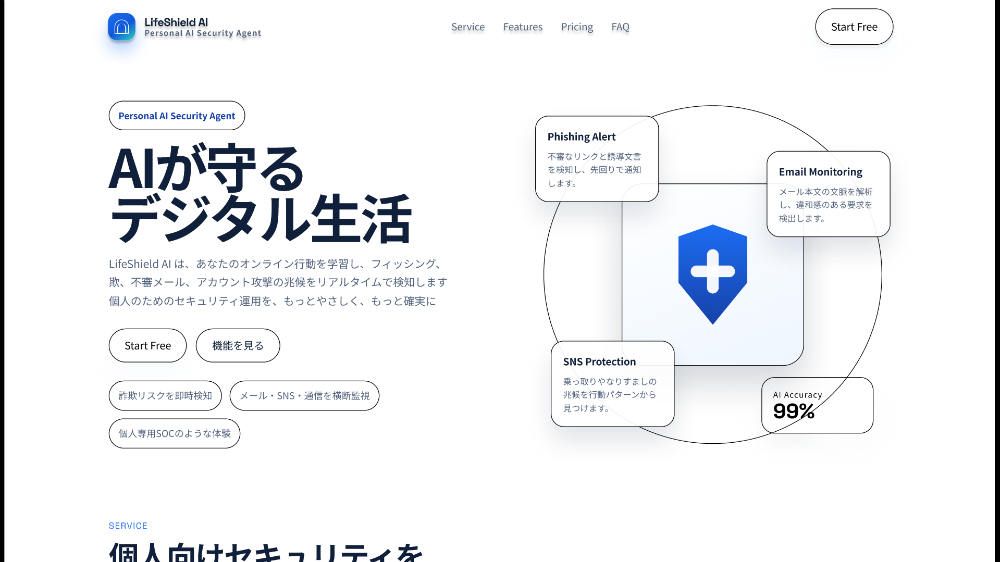

DOCUMENT 05
ワイヤーフレーム
ワイヤーフレーム作成方針
Figma用レイアウト設定 必須
Figma上でそのまま再現できるフレーム設定とページ構成
対象サービス名：LifeShield AI
Frame：Desktop Frame
Width：1440px
Height：Auto
Grid：12 columns
Margin：80px
Gutter：24px
ページ構成：HEADER → HERO → FEATURE → RESULT → CTA → FOOTER
トップページ
トップページ ワイヤーフレーム画像 必須
Figma の Play 表示をスクリーンショットしたトップページワイヤーフレーム

トップページ ワイヤーフレーム構成案 必須
ユーザー指定のFigma構成に合わせたPC版トップページのセクション順
[HEADER / 80px] Logo Nav Menu CTA Button [HERO / 600px] TEXT AREA IMAGE Title AIセキュリティイラスト Text (PC / SNS / Shield) Button [FEATURE / 500px] タイトル：LifeShield AIの機能 [AI詐欺検知] [メール監視] [SNS監視] [通信異常検知] [RESULT / 300px] 50000+ 120万 99% ユーザー数 詐欺検知 AI精度 [CTA / 320px] 今すぐAIセキュリティを始めよう 無料でLifeShield AIを体験 [無料で始める] [FOOTER / 220px] Logo サービス 料金 FAQ SNS / Twitter / LinkedIn © LifeShield AI
セクション別の配置設計 必須
各セクションの要素、推奨サイズ、配置意図をFigma向けに一覧化
| セクション | 配置する要素 | 推奨サイズ（相対比率） | 配置の意図 |
|---|---|---|---|
| Header | LifeShield AI ロゴ、Nav（サービス・機能・料金・FAQ）、CTAボタン「無料で始める」 | 高さ 80px、Horizontal Auto Layout、Space between、Padding 80px | ブランド認知、主要導線、行動喚起を最上部に集約し、初回訪問でも迷わず遷移できるようにするため |
| Hero | 左にタイトル・本文・ボタン、右にAIセキュリティイラスト（PC / SNS / Shield） | 高さ 600px、12カラム中 左6カラム / 右6カラム | 左で価値訴求、右でサービスの印象を視覚化し、ファーストビューで理解と記憶を両立させるため |
| Feature | セクションタイトル、4機能カード（AI詐欺検知、メール監視、SNS監視、通信異常検知） | 高さ 500px、4 columns layout、カード 260px × 180px、Radius 12px | 機能を横並びで比較しやすくし、サービス内容を短時間で把握させるため |
| Result | 3つの数値指標（50000+ ユーザー数、120万 詐欺検知、99% AI精度） | 高さ 300px、3 columns | 数値で信頼性を補強し、サービス紹介の直後に安心感を与えるため |
| CTA | 見出し、補足文、CTAボタン「無料で始める」 | 高さ 320px、背景グラデーション blue → purple | ページ後半で再度行動喚起し、興味を持ったユーザーを利用開始へつなげるため |
| Footer | ロゴ、リンク（サービス・料金・FAQ）、SNS（Twitter・LinkedIn）、コピーライト | 高さ 220px | 補助導線と企業情報を最下部に集約し、閲覧完了後の回遊と信頼補強を担うため |
Figma制作メモ 必須
作成時に揃えるべきレイアウトルール
全体の構成順：HEADER → HERO → FEATURE → RESULT → CTA → FOOTER
Hero はテキスト 6 columns、画像 6 columns で左右均等に分割する。
Feature は 4 columns layout でカードを均等配置し、カード間の余白を統一する。
Header は Auto Layout を使い、Horizontal / Space between / Padding 80px で組む。
CTA セクションは blue → purple のグラデーション背景で、他セクションより強く視線を集める。
下層ページ
下層ページ ワイヤーフレーム 必須
各下層ページのワイヤーフレームを順に配置
（ここに各下層ページのワイヤーフレーム画像と説明を配置） 【ページ名1】 <img src="../images/wireframe/page1-pc.png" alt="ページ名1 ワイヤーフレーム"> 配置意図：（説明） 【ページ名2】 <img src="../images/wireframe/page2-pc.png" alt="ページ名2 ワイヤーフレーム"> 配置意図：（説明）
Webアプリケーション画面
Webアプリ画面 ワイヤーフレーム 必須
主要な画面（ログイン・一覧・登録・詳細・編集）のワイヤーフレーム
（ここにWebアプリ画面のワイヤーフレーム画像を配置）
スマートフォン版
スマートフォン版 ワイヤーフレーム 任意
主要ページのスマートフォン版ワイヤーフレーム
（ここにスマートフォン版のワイヤーフレーム画像を配置）